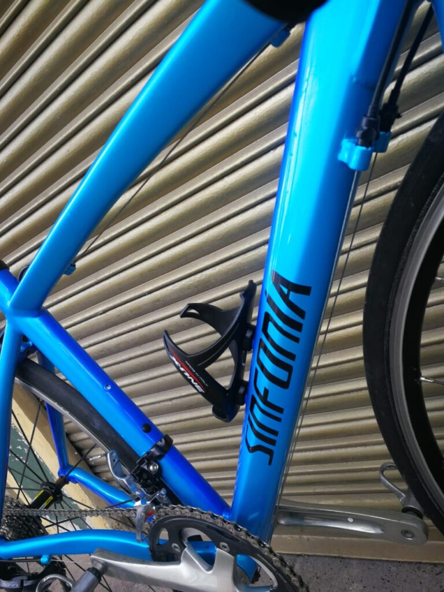

 La Chinarello, una bicicleta legendaria Por César Augusto Penagos Collazos 20 de mayo de 2025 Durante 10 años puedo decir que he recorrido más o…
¿A quién le conviene que se hunda el preacuerdo con Olmedo López? Por Sevillano 19 de mayo de 2025 He seguido muy juiciosamente lo que tiene que ver con el preacuerdo...